Hasta ahora, hemos trabajado de varias maneras con el fichero de estaciones meteorólogicas del valle del Ebro (estaciones.shp). En primer lugar, extrajimos los valores de temperatura, así como una serie de predictores (elevación, distancia al Atlántico…) para ajustar modelos de regresión lineal. También utilizamos predictores continuos para generar mapas de temperatura espacialmente continuos, más allá de las zonas donde hay estaciones. Ahora haremos algo parecido, pero en vez de usar las variables explicativas (elevación, etc.) como predictores, vamos a utilizar los valores de temperatura medidos, así como su distribución espacial, para generar mapas continuos de temperatura. Es el proceso que se conoce como interpolación espacial, y veremos varios métodos. Pero antes de nada, debemos cargar las librerías y ficheros de datos necesarios. En este caso, además de los paquetes típicos que solemos usar (tmap, sf, terra…) usaremos la librería gstat
Reading layer `estaciones_meteo' from data source
`C:\Users\Usuari\OneDrive - udl.cat\Teaching\EFCN_Geoestadística\Labs_Geoestadistica_Forestal\data\meteo\meteo_espacial\estaciones_meteo.shp'
using driver `ESRI Shapefile'
Simple feature collection with 90 features and 13 fields
Geometry type: POINT
Dimension: XY
Bounding box: xmin: 574966 ymin: 4514365 xmax: 818327 ymax: 4635648
Projected CRS: ETRS89 / UTM zone 30N
Y podemos visualizar los datos, como hemos visto en otras unidades:
tm_shape(estaciones) +tm_dots(col="Tmed_MES", size=0.25, title ="Temp. media (ºC)") +tm_text("Tmed_MES", just="left", xmod=.5, size =0.7) +tm_legend(legend.outside=TRUE)
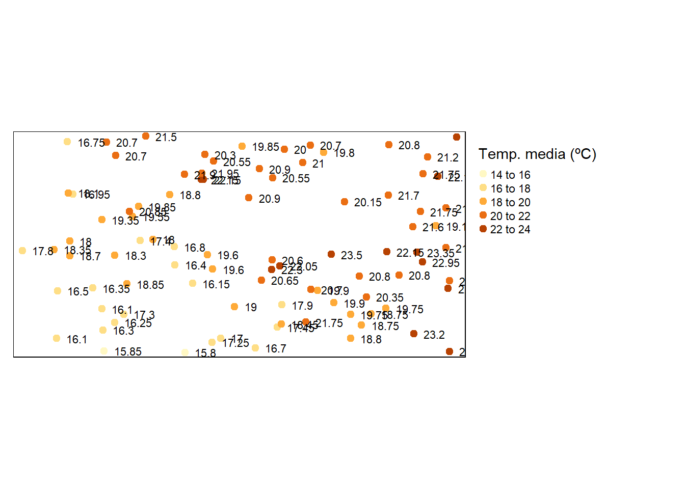
Existen varios métodos de interpolación de información espacial, y se suelen clasificar en métodos determinísticos y métodos geoestadísticos. Los primeros simplemente realizan una inferencia de la información entre dos puntos “suavizando” la diferencia de valores entre ellos, mientras que los métodos geoestadísticos utilizan las propiedades estadísticas de los valores para realizar la interpolación. Veamos en primer lugar los métodos determinísticos:
9.2 Métodos determinísticos de interpolación
Exploraremos dos métodos determinísticos: vecino más próximo (aka Thiessen) y técnicas basadas en asignar pesos según el inverso de la distancia (IDW, de las siglas en inglés de inverse distance weighted).
9.2.1 Método de polígonos de Thiessen o Voronoi (nearest neighbor interpolation)
Es el método más simple (y más antiguo) de interpolación. Lo introdujo Alfred H. Thiessen hace más de un siglo. El procedimiento consiste en asignar, a cada punto del territorio no muestreado (para el que no tenemos información), el valor del punto muestreado más próximo. Esto genera una superficie teselada en el que las lineas que separan las teselas corresponden a la mitad de la distancia entre dos puntos. Estas líneas se conectan, de manera que cada área comprende uno de los puntos de la muestra.
Veamos como hacerlo en R, usando la función voronoi() de la librería dismo:
library(dismo)
Cargando paquete requerido: raster
Cargando paquete requerido: sp
thiessen <-voronoi(x =st_coordinates(estaciones))
Loading required namespace: deldir
Veamos el objeto que ha generado esta función:
plot(thiessen) +points(estaciones, pch =19)
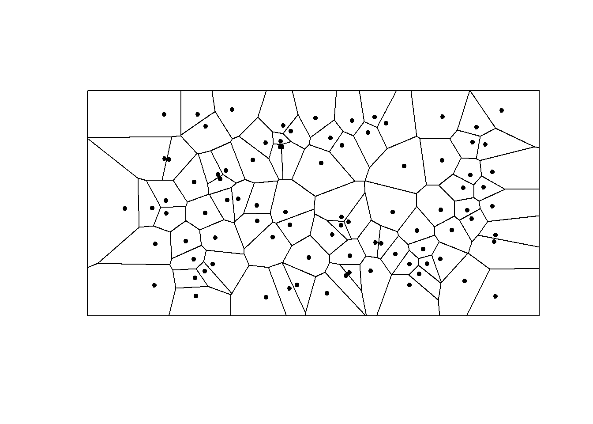
integer(0)
NOTA: ArcMap también ofrece la posibilidad de realizar una interpolación por polígonos de Thiessen, mediante la función Natural neighbor que se encuentra dentro del módulo Spatial Analyst/Interpolation.
9.2.2 Inverse Distance Weighted (IDW)
El método IDW calcula un valor para cada punto sin él usando valores de los vecinos más próximos. Los pesos asignados a cada vecino son proporcionales a su cercanía al punto del que se quiere obtener el valor, y se pueden modular con el parámetro del exponente. Cuanto mayor sea dicho parámetro, más peso tendrán los puntos cercanos.
Para poder aplicar el idw, debemos, en primer lugar, crear un grid vacío a partir de un raster, al que después asignaremos los valores que determine la función. Para crear dicho grid y raster debemos seguir los siguientes pasos:
# Creamos el raster vacío, con la misma extensión y crs que nuestros datosr <-rast(ext(estaciones), crs =crs(estaciones))# Definimos la resolución de este rasterres(r) <-1000# Lo convertimos a grid mediante la función `st_as_stars()` del paquete `stars`library(stars)
Cargando paquete requerido: abind
grid <-st_as_stars(r, na.rm =FALSE)
Warning: [readValues] raster has no values
Una vez generado el objeto grid podemos generar la interpolación, usando la función idw(), del paquete gstat(). Esta función tiene una notación parecida a la de la regresión, ya que debemos especificar una fórmula (en este caso Tmed_MES ~ 1), el dataset donde estan los datos (estaciones), y el objeto para el que queremos generar la interpolación (grid)
Warning in asMethod(object): complete map seems to be NA's -- no selection was
made
[inverse distance weighted interpolation]
Warning in asMethod(object): complete map seems to be NA's -- no selection was
made
Sin embargo, este objeto no tiene el formato SpatRaster, sino que es un objeto de tipo stars que contiene tanto la predicción como la varianza:
idw
stars object with 2 dimensions and 2 attributes
attribute(s):
Min. 1st Qu. Median Mean 3rd Qu. Max. NA's
var1.pred 15.81822 18.2985 19.97745 19.60785 20.73401 23.46503 0
var1.var NA NA NA NaN NA NA 29403
dimension(s):
from to offset delta refsys x/y
x 1 243 574966 1000 ETRS89 / UTM zone 30N [x]
y 1 121 4635365 -1000 ETRS89 / UTM zone 30N [y]
En este caso, como el método es determinístico, el campo de la varianza sólo contiene valores de NA .
shj idw$var1.var}
Podemos plotear directamente este objeto de clase stars usando la función de siempre: plot():
plot(idw)
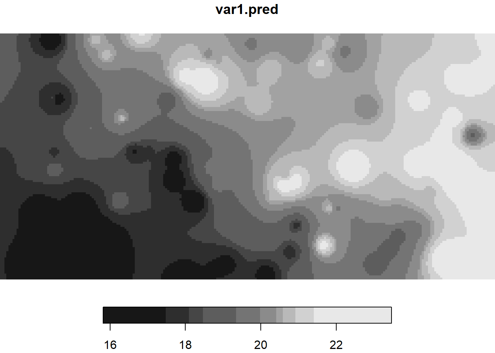
Sin embargo, si queremos convertirlo en un raster como los que hemos trabajado hasta ahora, tenemos que hacer una pequeña conversión. De esta manera, podremos usarlo en una función tmap() o añadirle puntos encima, etc.
Para la conversión podemos hacer:
idw_raster <-rast(as(idw, "Raster"))
Ahora se ha convertido en un objeto raster normal, que contiene dos capas:
idw_raster
class : SpatRaster
dimensions : 121, 243, 2 (nrow, ncol, nlyr)
resolution : 1000, 1000 (x, y)
extent : 574966, 817966, 4514365, 4635365 (xmin, xmax, ymin, ymax)
coord. ref. : ETRS89 / UTM zone 30N (EPSG:25830)
source(s) : memory
names : var1.pred, var1.var
min values : 15.81822, NaN
max values : 23.46503, NaN
Y podemos visualizar los resultados de la interpolación como hemos hecho siempre con plot():
Con esto ya habríamos completado la interpolación espacial usando el método IDW. Podríamos jugar con varios de los parámetros de la función: el número máximo de vecinos a considerar (nmax), o el exponente a usar en la fórmula (idp). Por ejemplo, si usamos un exponente alto:
Warning in asMethod(object): complete map seems to be NA's -- no selection was
made
[inverse distance weighted interpolation]
Warning in asMethod(object): complete map seems to be NA's -- no selection was
made
plot(idw_0)
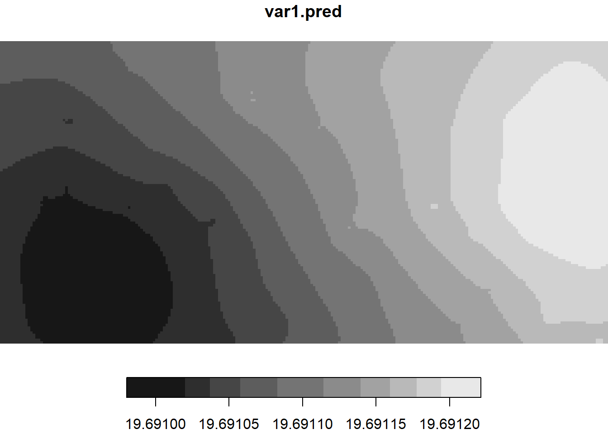
Esto es todo lo que necesitamos saber sobre la interpolación mediante IDW. Este es uno de los métodos más usados, debido a que es simple y en la mayor parte de los casos funciona muy bien. Sin embargo, la elección del exponente no deja de ser subjetiva, y como acabamos de ver puede tener un efecto muy grande en las predicciones. Hay un segundo tipo de interpolaciones que usan la información espacial de los puntos (información de 1r y 2º orden) para derivar modelos probabilísticos con los valores predichos. Son los llamados métodos geoestadísticos.
NOTA: ArcGis y QGis también ofrecen la posibilidad de realizar una interpolación por IDW. En ArcGis Pro se puede hacer mediante la función IDW que se encuentra dentro del módulo Spatial Analyst/Interpolation. Esta función nos permite seleccionar el exponente de la ecuación, el radio de búsqueda de vecinos, definir obstáculos… En QGis se puede obtener mediante la herramienta Spatial Analysis/Interpolation.
9.3 Métodos geoestadísticos (kriging)
Tras aprender cómo interpolar siguiendo dos de los métodos determinísticos más típicos (polígonos de Thiessen e IDW), es el turno de los métodos geoestadísticos, entre los que el kriging es sin duda el más popular. Esta técnica se basa en modelos probabilísticos para calcular el valor de la variable respuesta en cualquier punto. El kriging se basa en el semivariograma de la variable que se quiere interpolar para ajustar y parametrizar un modelo, así que podríamos decir que funciona mejor cuanto mayor sea la autocorrelación espacial de la variable a interpolar. Es un método que además de generar las predicciones, ofrece también una estimación del error cometido en dichas estimación, lo que nos permite evaluar la calidad de la interpolación. Por último, permite un alto grado de personalización, de manera que con un ajuste adecuado de los parámetros se generan predicciones muy buenas.
El proceso es similar al que hemos visto en el ejemplo del IDW, Debemos generar un raster en “blanco” al que luego asignaremos los valores resultantes de la interpolación. La diferencia es que la interpolación porkriging se basa en el semivariograma, y por tanto, debemos generarlo. Los pasos a seguir serán por tanto:
Obtener el semivariograma empírico a partir de nuestros datos
Determinar los parámetros (rank, nugget, sill) del semivariograma teórico
Ajustar el semivariograma teórico
Ajustar el modelo de kriging
9.3.1 Crear el semivariograma observado
Podemos hacerlo directamente a partir de nuestro fichero de puntos, utilizando la función variogram(). Esta función ploteará el semivariograma a partir de los puntos observados, y podremos determinar los parámetros del semivariograma teórico (rank, nugget, sill). La sintaxis de la función variogram() es similar a la que hemos visto en IDW o en los modelos de regresión.
Mediante el argumento formula podemos definir el tipo de kriging a aplicar (los más típicos son ordinary kriging y universal kriging). En este ejemplo implementaremos un ordinary kriging, por lo que la fórmula será del tipo (<variable> ~ 1). No lo veremos aquí, pero en caso de querer interpilar usando el universal kriging la fórmula sería: <variable> ~ x + y.
Creemos por tanto el variograma empírico:
ve <-variogram(object = Tmed_MES ~1, data = estaciones)
Y podemos visualizarlo:
plot(ve)
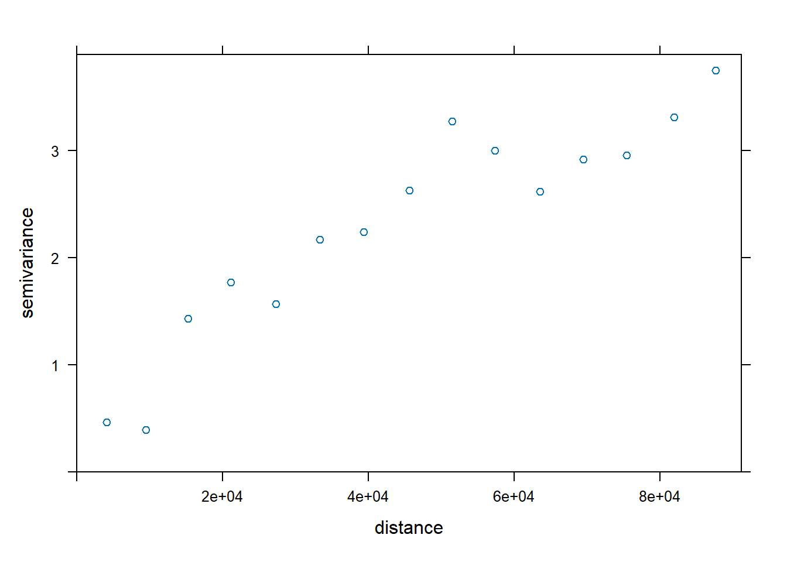
El argumento width controlará el tamaño de los bins que usemos:
ve <-variogram(object = Tmed_MES ~1, data = estaciones,width =5000)plot(ve)
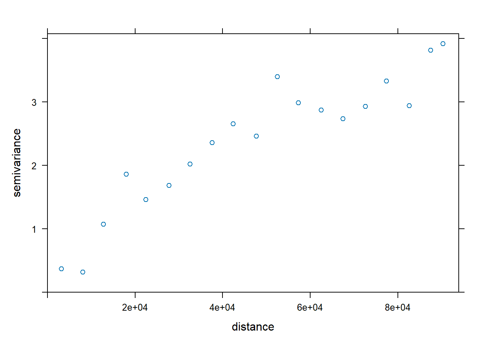
9.3.2 Determinar los parámetros del semivariograma teórico
También podemos inspeccionar el objeto ve que acabamos de crear, para determinar los valores de nugget, sill y rank del semivariograma teórico que tendremos que ajustar:
El nugget será el mínimo valor de gamma (en este caso, 0.3943), el sill se alcanza cuando gamma se estabiliza (3.3992), y el range será la distancia a la que se alcanza el sill (52480.916). Estos números los emplearemos en el siguiente paso, cuando ajustemos el semivariograma teórico.
9.3.3 Ajustar el semivariograma teórico
Para este paso debemos modelizar una curva que ajuste lo mejor posible los valores del semivariograma empírico. Para ello, debemos seleccionar la forma que queremos que tenga el semivariograma, y asignarle los parámetros que hemos definido antes. Podemos acceder al catálogo de formas disponibles mediante:
show.vgms()
En este caso vamos a seleccionar la curva de tipo “Exp”, y la aplicaremos con la función fit.variogram():
vt <-fit.variogram(ve, vgm(psill =3.3992, model ="Exp", range =52480.916, nugget =0.3943))vt
model psill range
1 Nug 0.000000 0.00
2 Exp 3.957497 43325.59
Ahora podemos plotearlo, a ver si realmente ajusta bien:
plot(ve, pl = T, model = vt)
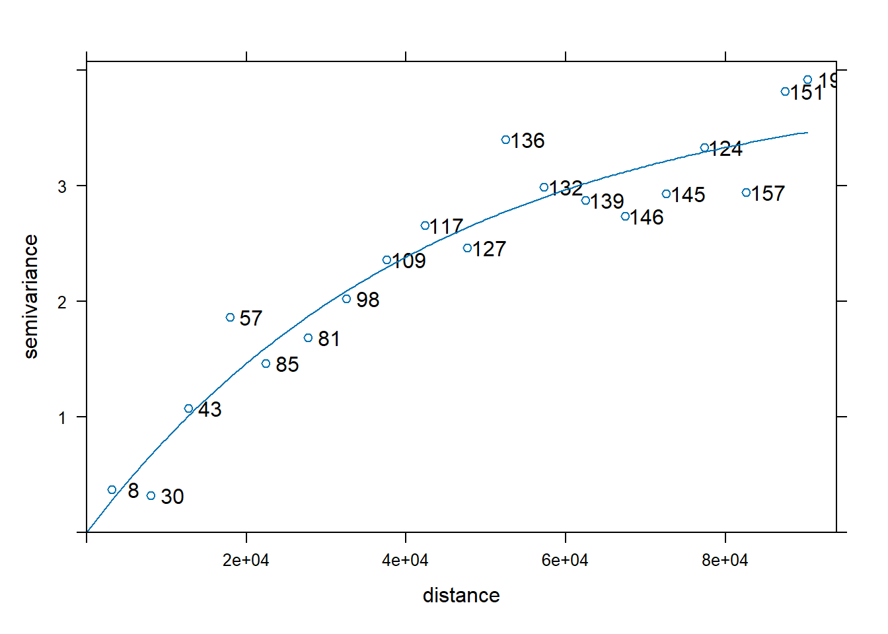
Vemos que, efectivamente, el ajuste es bastante bueno, por lo que nos conformamos con el semivariograma teórico ajustado.
9.3.4 Aplicar el modelo de kriging a los datos:
A partir de aquí el procedimiento es similar al que hemos visto para IDW: debemos crear un raster vacío con la extensión del área a analizar, y después le asignaremos los valores generados por el kriging. Como antes ya hemos generado el objeto grd, no necesitamos volver a hacerlo, y podemos generar la interpolación, de forma similar a la que hemos visto antes, usando la función krige():
k <-krige(Tmed_MES ~1, locations = estaciones, newdata = grid, model = vt)
Warning in asMethod(object): complete map seems to be NA's -- no selection was
made
[using ordinary kriging]
Warning in asMethod(object): complete map seems to be NA's -- no selection was
made
k
stars object with 2 dimensions and 2 attributes
attribute(s):
Min. 1st Qu. Median Mean 3rd Qu. Max.
var1.pred 15.838643541 17.9220405 20.1211162 19.5900002 21.061067 23.420031
var1.var 0.003102869 0.6709149 0.9144648 0.9501347 1.213168 2.680639
dimension(s):
from to offset delta refsys x/y
x 1 243 574966 1000 ETRS89 / UTM zone 30N [x]
y 1 121 4635365 -1000 ETRS89 / UTM zone 30N [y]
El objeto generado (k) contiene, igual que antes, 2 dimensiones: las predicciones (columna var1.pred), y la varianza (precisión) de las predicciones (columna var1.var), que en este caso sí contiene valores. Podemos plotear los resultados, y por defecto nos mostrará el valor de la predicción:
plot(k)
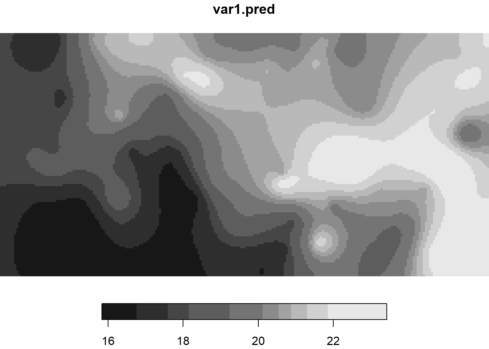
Si queremos especificar la varianza, también lo podemos hacer:
plot(k["var1.var"])
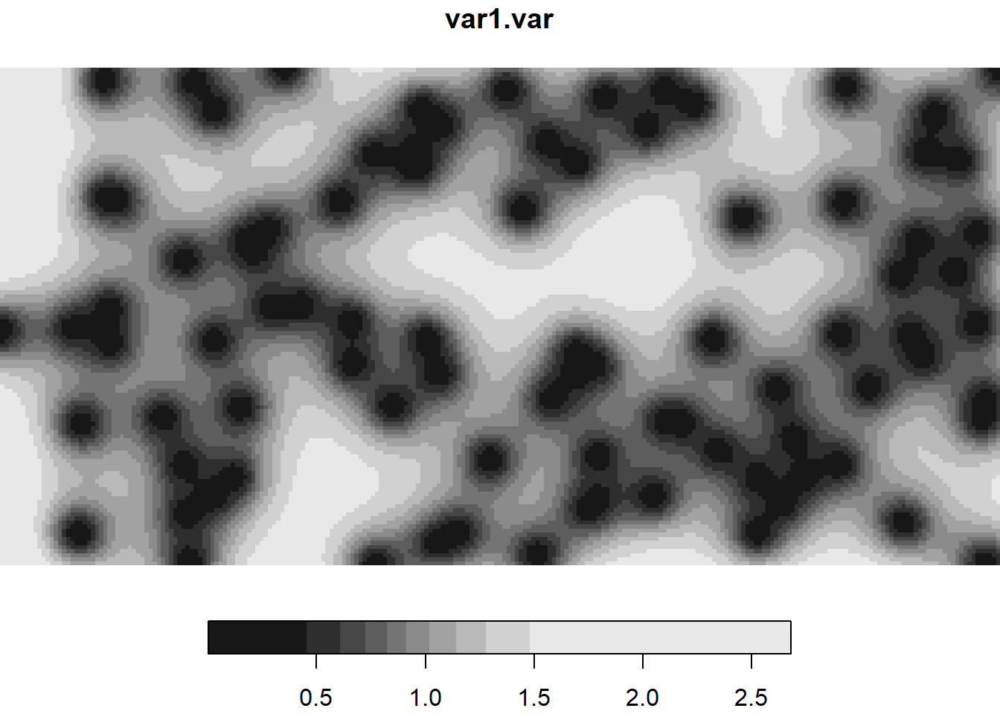
Vemos que la varianza es mínima - de hecho 0 - en los puntos, y se hace mayor en las zonas sin densidad de puntos.
Igual que antes, podemos transformar este objeto a uno de tipo SpatRaster para hacerlo más integrable con otro tipo de visualizaciones:
Incluso podemos representar encima los puntos observados:
plot(k2$var1.pred, main ="Predicció")points(estaciones, pch =19, cex =0.8)
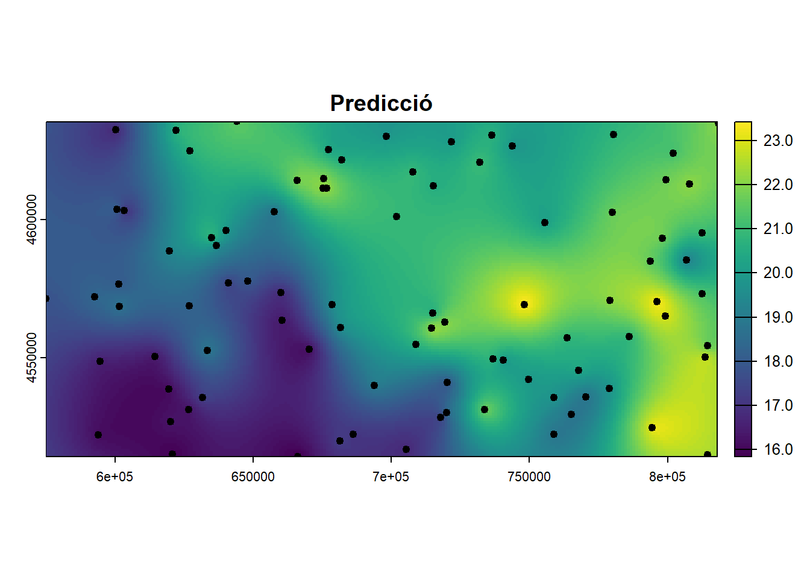
Echemos ahora un vistazo a la precisión de las predicciones:
plot(k2$var1.var, main ="Varianza")points(estaciones, pch =19, cex =0.8)
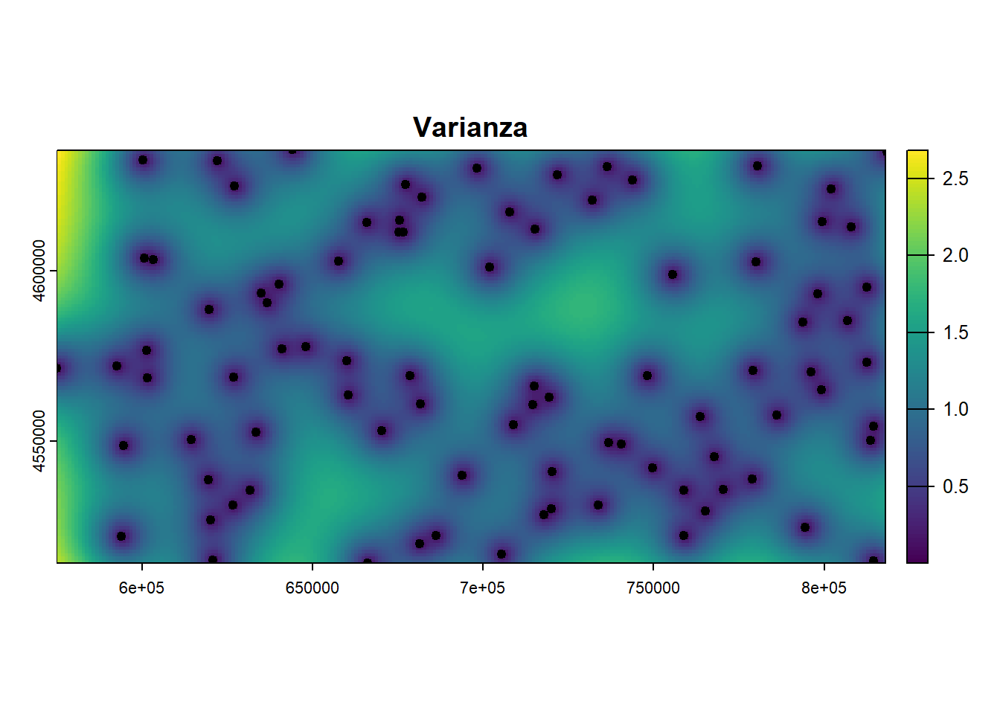
Vemos, como comentábamos antes, que el error es mínimo en cada una de las observaciones, y mayor en las zonas donde hay espacios grandes sin datos de estaciones.
Existe una función que automatiza todo el proceso de ajuste del modelo de kriging, de manera que no hay que determinar los parámetros, la forma, etc. manualmente. Si estáis pensando que podía haber explicado este método desde el principio, tened en cuenta que es importante entender cómo se genera el proceso antes de realizarlo de manera automática. La función en cuestión es autoKrige(), del paquete automap:
Warning in asMethod(object): complete map seems to be NA's -- no selection was
made
[using ordinary kriging]
Warning in asMethod(object): complete map seems to be NA's -- no selection was
made
autok$var_model
model psill range kappa
1 Nug 0.1569758 0.00 0.0
2 Ste 3.6365982 52150.83 0.7
Además, nos genera un output muy adecuado con sólo usar la función plot()
plot(autok)
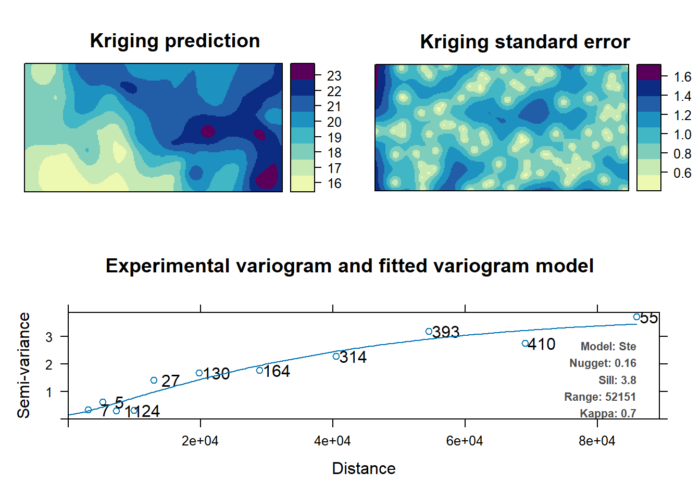
NOTA: ArcGIS y QGis también ofrece la posibilidad de realizar una interpolación por kriging, mediante la función Kriging que se encuentra dentro del módulo Spatial Analyst/Interpolation o Spatial Analysis/Interpolation
Esto es todo lo que necesitamos saber de la interpolación mediante kriging. El hecho de que permita optimizar los parámetros y que nos proporciones estimaciones de la precisión hacen sin duda del kriging el método de interpolación más completo y utilizado.
9.3.5 Otros ajustes de kriging
El modelo de kriging que hemos usado hasta ahora es un kriging ordinario, lo que se indica al ajustar la función krige(), indicando Tmed_MES ~ 1. Para seleccionar otro tipo de kriging, podemos cambiar la notación de esa fórmula, de acuerdo a lo siguiente:
Kriging simple: Z ~ 1 (requiere definir el parámetro beta )
Kriging ordinario: Z ~ 1
Kriging universal: Z ~ x + y
Veamos por ejemplo cual sería el resultado de un ajuste por kriging universal, el método más común:
estaciones$x <-st_coordinates(estaciones)[,1]estaciones$y <-st_coordinates(estaciones)[,2]uk <-krige(Tmed_MES~ x + y, locations = estaciones, newdata = grid, model = vt)
Warning in asMethod(object): complete map seems to be NA's -- no selection was
made
[using universal kriging]
Warning in asMethod(object): complete map seems to be NA's -- no selection was
made
uk2 <-rast(as(uk, "Raster"))plot(uk2$var1.pred, main ="Predicción por Universal kriging")
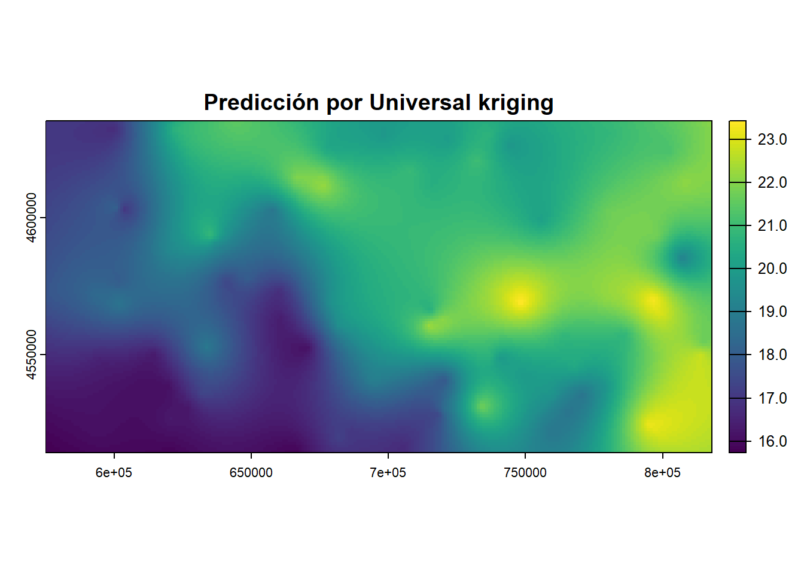
auto_uk <-autoKrige(Tmed_MES ~ x + y, estaciones, grid)
Warning in asMethod(object): complete map seems to be NA's -- no selection was
made
[using universal kriging]
Warning in asMethod(object): complete map seems to be NA's -- no selection was
made
plot(auto_uk)
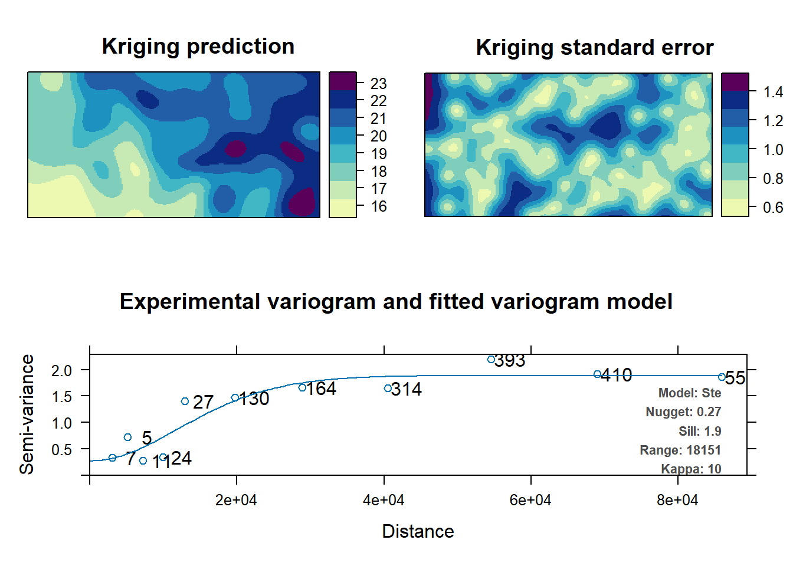
9.4 Validación y métricas de calidad de los modelos de interpolación
Tras haber interpolado en base a dos métodos (IDW y kriging) se hace necesario evaluar cómo de buenas son esas interpolaciones. Esto lo haremos mediante una validación cruzada y el cálculo de una serie de métricas de calidad del modelo:
9.4.1 Validación cruzada
La validación cruzada consiste en comparar, para cada valor de la muestra (cada observación) la diferencia entre el valor observado y el predicho por el modelo. Sin embargo, no podemos incluir el punto u observación que queremos evaluar, ya que si no la predicción sería exactamente igual a la observación. Por ello, lo que se hace es ir excluyendo una a una las observaciones, y se determina cuál sería el valor predicho para ese punto por un modelo elaborado con todos los demás puntos. Esto se hace de manera repetitiva - iterativa - con todos los puntos de la muestra, y al final tendremos una serie de valores (residuos) de la diferencia entre el valor observado y el predicho.
R nos pone fácil realizar la validación cruzada, a través de la función krige.cv(), del paquete gstat. Dicha función permite como entrada un objeto de tipo gstat en el argumento model, que es lo que determinará el tipo de interpolación que hacemos. Así, si no indicamos nada en model, realizará una interpolación por IDW:
Vemos que tarda más que antes, ya que tiene que hacer numerosas interpolaciones. Una vez ajustado, podemos acceder a los datos:
idw_cv
Simple feature collection with 90 features and 6 fields
Geometry type: POINT
Dimension: XY
Bounding box: xmin: 574966 ymin: 4514365 xmax: 818327 ymax: 4635648
Projected CRS: ETRS89 / UTM zone 30N
First 10 features:
var1.pred var1.var observed residual zscore fold geometry
1 18.19902 NA 15.80 -2.3990215 NA 1 POINT (666121 4514365)
2 20.96552 NA 22.45 1.4844775 NA 2 POINT (814489 4514857)
3 17.22110 NA 15.85 -1.3711008 NA 3 POINT (620767 4515276)
4 18.80757 NA 16.70 -2.1075670 NA 4 POINT (705449 4516865)
5 17.51609 NA 17.25 -0.2660859 NA 5 POINT (681326 4520030)
6 17.61897 NA 16.10 -1.5189729 NA 6 POINT (593975 4522166)
7 19.69973 NA 18.80 -0.8997303 NA 7 POINT (758868 4522277)
8 17.78630 NA 17.00 -0.7862966 NA 8 POINT (686217 4522281)
9 20.50400 NA 23.20 2.6960017 NA 9 POINT (794466 4524785)
10 16.83975 NA 16.30 -0.5397491 NA 10 POINT (620133 4526863)
Vemos que contiene los valor predichos, los observados, y el residuo. Esto nos permite representar el gráfico de valores observados y predichos:
Esto mismo lo podemos hacer para el modelo de interpolado mediante ordinary kriging, simplemente indicando el modelo de variograma que queremos (model = vt)
plot(ok_cv$observed, ok_cv$var1.pred, main ="Observed vs. predicted for Ordinary kriging") +abline(0,1)
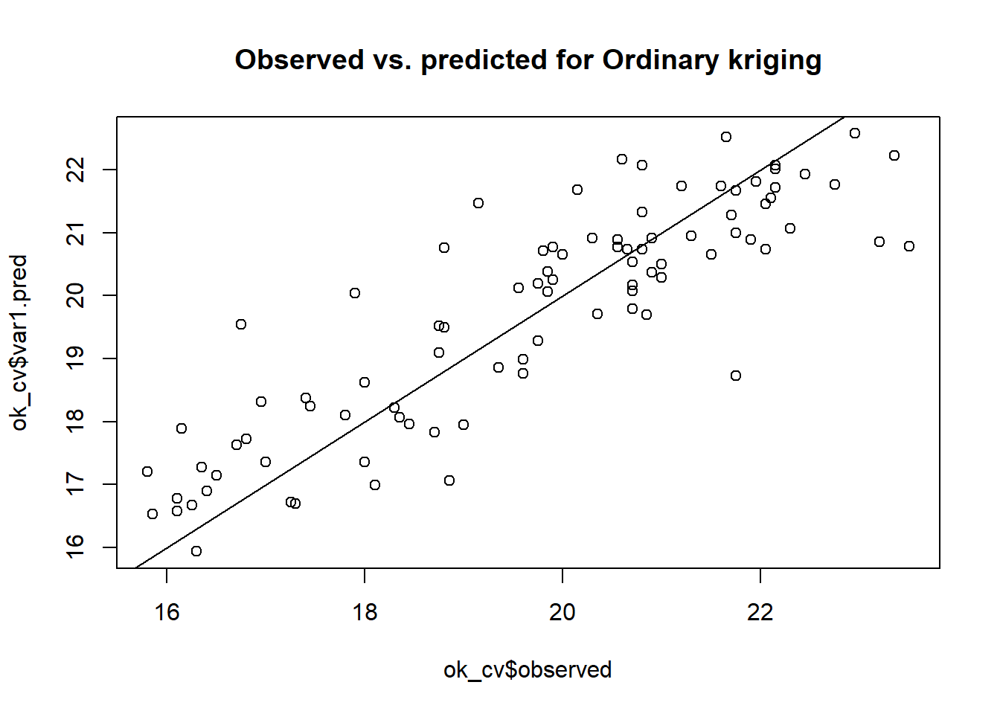
integer(0)
… o el de universal kriging, donde además de model debemos especificar la fórmula correspondiente:
uk_cv <-krige.cv(Tmed_MES~x+y, locations = estaciones, model = vt)plot(uk_cv$observed, uk_cv$var1.pred, main ="Observed vs. predicted for Universal kriging") +abline(0,1)
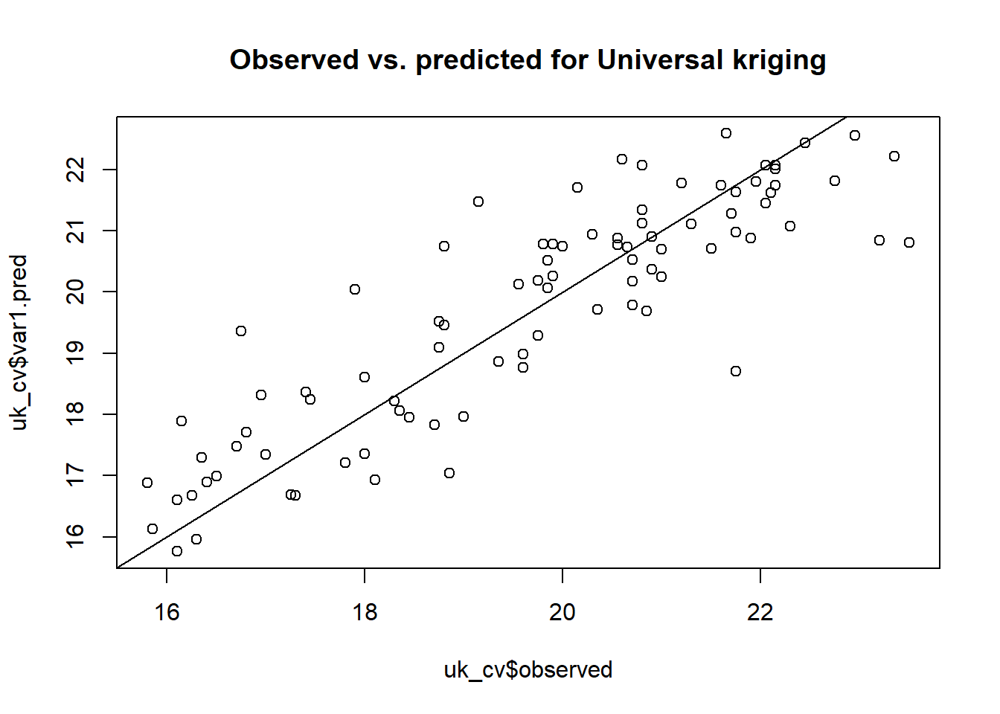
integer(0)
9.4.2 Métricas de calidad
La validación cruzada ya es una pista muy buena de si la interpolación que hemos generado es adecuada o no, ya que nos permite evaluar los sesgos en las predicciones - una predicción no sesgada debería ajustarse de manera simétrica y cercana a la recta 1:1 entre valores observados y predichos-. Pero hay maneras más cuantitativas de realizar una evaluación de la calidad del modelo. Para ello podemos calcular algunos indicadores o métricas:
Correlación observados-predichos
Lógicamente, cuanto mayor sea la correlación entre valores observados y predichos, mejor será el modelo ajustado. Podemos calcularlo para el IDW y el kriging:
Vemos que en todos los casos son muy altos, y son valores muy similares.
Media de los residuos (error medio, ME)
Tal y como vimos en la unidad relativa a la regresión lineal, nos interesa aquí que los residuos sean lo más pequeños posible (en valor absoluto) y que además tengan media próxima a cero. Podemos calcular la media:
#IDWmean(idw_cv$residual)
[1] -0.07808131
# Ordinary Krigingmean(ok_cv$residual)
[1] -0.02155456
# Universal Krigingmean(uk_cv$residual)
[1] -0.02068641
…y además construir el boxplot o histograma
hist(idw_cv$residual, main ="Histograma de residuos para IDW")
hist(ok_cv$residual, main ="Histograma de residuos para ordinary kriging")
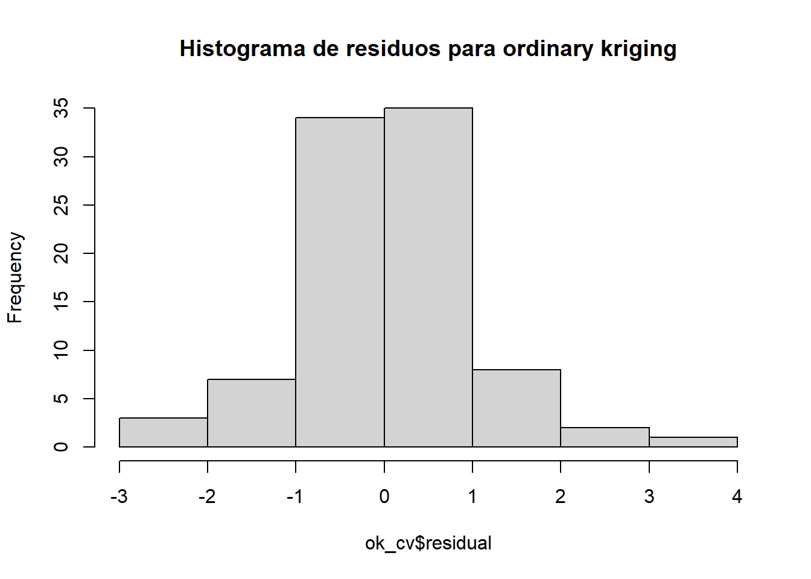
hist(uk_cv$residual, main ="Histograma de residuos para universal kriging")
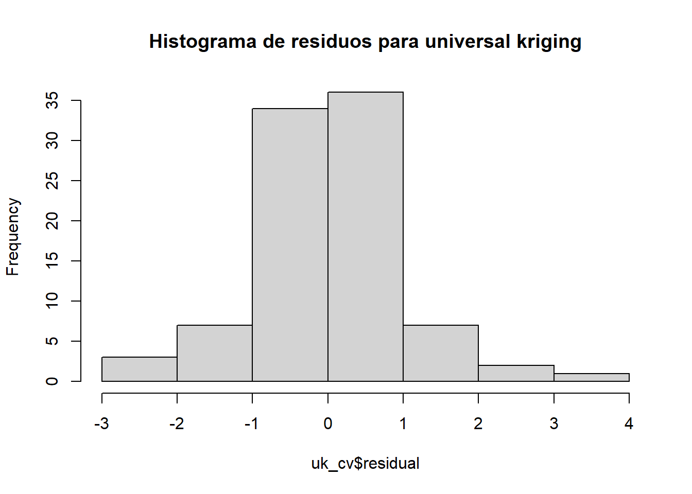
Vemos también que parecen normales y centrados en el cero.
Media estandarizada del error de predicción (mean square predictor error; MSPE)
El MSPE es la media del cuadrado de los errores de predicción, es decir, de los residuos. Interesa por tanto que sea lo más pequeño posible:
# Para IDWmean(idw_cv$residual^2)
[1] 1.254002
# Para ordinary Krigingmean(ok_cv$residual^2)
[1] 1.030617
# Para universal Krigingmean(uk_cv$residual^2)
[1] 0.9851296
Raíz del error cuadrático medio (Root of Mean Squared Error; RMSE):
El RMSE es una medida muy común de performance de un modelo. Es la raíz del cociente entre la suma de los cuadrados de los residuos y el número de observaciones. Tiene la ventaja de que está en las mismas unidades que la variable respuesta, por lo que su valor es fácilmente interpretable como una especie de “error medio” en las predicciones:
# Para IDWsqrt(sum(idw_cv$residual^2)/length(idw_cv$residual))
[1] 1.119822
# Para ordinary krigingsqrt(sum(ok_cv$residual^2)/length(ok_cv$residual))
[1] 1.015193
# Para universal krigingsqrt(sum(uk_cv$residual^2)/length(uk_cv$residual))
[1] 0.992537
Podemos incluso hacer una tabla resumen con los parámetros:
Metodo
Correlacion
ME
MSPE
MRSE
IDW
0.8598952
-0.0780813
1.2540020
1.119822
Ordinary kriging
0.8713259
-0.0215546
1.0306172
1.015193
Universal kriging
0.8774583
-0.0206864
0.9851296
0.992537
En este caso, todos los indicadores parecen favorecer el kriging: los residuos son más bajos, las métricas de error también, y la correlación entre valores observados y predichos es ligeramente mejor. Por tanto, consideraremos que esta interpolación es más adecuada que la de IDW. En concreto, el universal kriging parece ser el método que produce las mejores predicciones (aunque por poco, los tres métodos son bastante similares).
9.5 Conclusiones
Con esto hemos visto cómo producir interpolaciones con diversas métricas, y cómo evaluar la calidad de la interpolación generada. El kriging acostumbra a ser el método más robusto, pero también es computacionalmente más exigente. La decisión final dependerá del objetivo, la precisión requerida, y la disponibilidad de tiempo y de capacidad de computación. En este enlace podéis ver una discusión sobre los pros y contras de cada método usando como ejemplo el procesado de ficheros LiDAR para generar un MDT (es materia que se cubre en la asignatura “Tecnologies Digitals 2: Arbre i rodal” del Màster en Enginyeria de Forests). En el ejemplo con el que hemos trabajado, sin embargo, un IDW muestra ser suficientemente preciso.